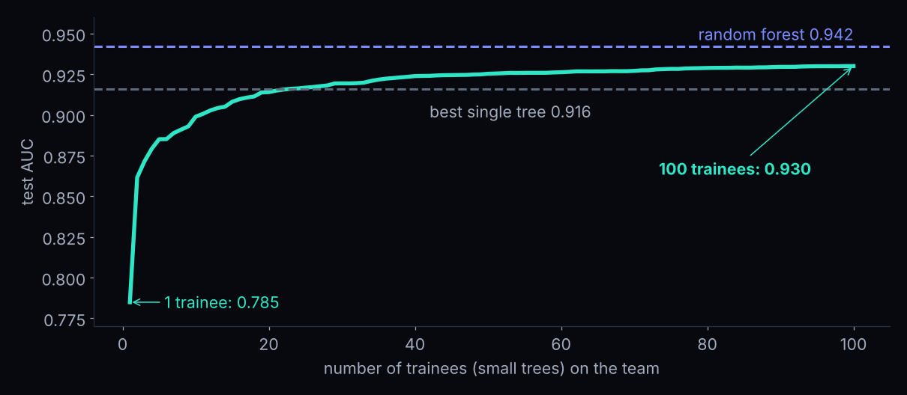
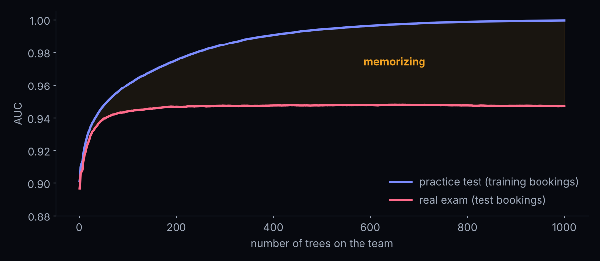
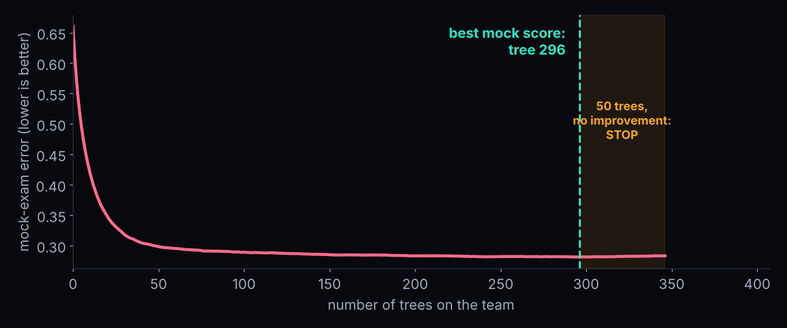
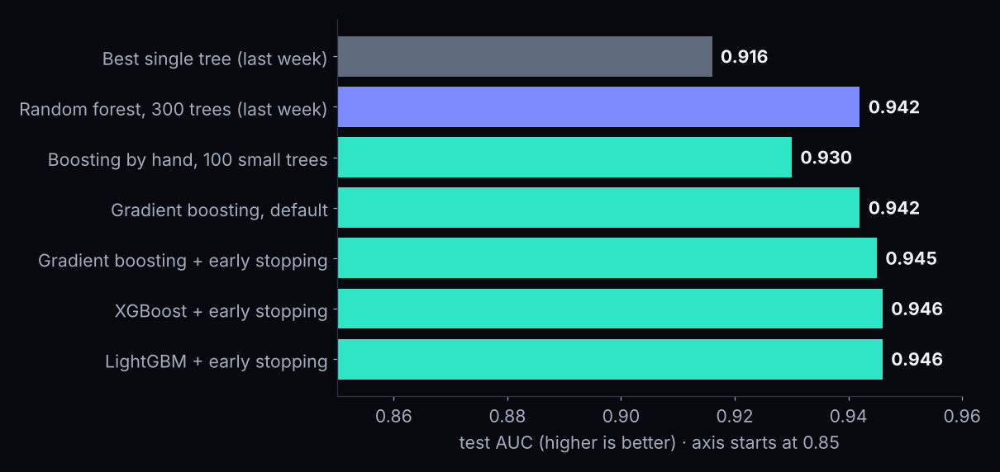

The team gives every booking 38%. The bottom chart shows where it is wrong.
Drag the cut. Ask one question: "booked more than N days ahead?" Press Hire my trainee.
Hire 5 trainees. The computer's team scores 0.668. Can yours do better?
Step 2 · by hand · follow one real guest
Booked 510 days ahead, non-refundable. Canceled.
Trainee 1 says "raise this guest by 0.62". We keep 30% of that: +0.19. Then we measure the miss again.
Now six real guests · same three trainees
Watch the scores move
lead time
deposit
canceled?
round 0
round 1
round 2
round 3
510 days
Non Refund
YES
0.37
0.56
0.69
0.78
356 days
Non Refund
YES
0.37
0.56
0.69
0.78
24 days
No Deposit
YES
0.37
0.34
0.32
0.32
249 days
No Deposit
no
0.37
0.34
0.32
0.32
6 days
No Deposit
no
0.37
0.29
0.35
0.35
0 days
No Deposit
no
0.37
0.29
0.20
0.16
Cancelers should climb toward 1, stayers sink toward 0. Row 3 is a hard case: a later trainee must fix it.
The whole algorithm
Three lines. You just built gradient boosting
team = 37% for every booking # round 0for round in range(100):
miss = what_happened - team # 1. what is still wrong?
trainee = small_tree.fit(clues, miss) # 2. a small tree learns the miss
team += 0.3 * trainee.predict(clues) # 3. add 30% of its correction
Miss, trainee, add. That is all it is.
Our hand-built team · test AUC
Every trainee helps a little

25 small trees pass last week's best single tree. 100 reach 0.930.
Why is it called gradient boosting?
Walking downhill in the fog
The hill is the model's total error. The miss says which way is downhill for every booking. That direction is the gradient.
Each small tree is one step down the hill.
You can't see the bottom, but you can feel the slope. The same idea trains neural networks: they nudge weights downhill.
Break · 10 minutes
☕
Back at 6:15. Then: the real tool, and a rule from last week that breaks.
Step 3 · the real tool
HistGradientBoostingClassifier
A long name for the thing we just built by hand. It comes with scikit-learn.
Hist
Buckets
Every number goes into one of 255 buckets, like age groups. Very fast.
Gradient Boosting
What we just built
Miss, small tree, add.
Gifts
Blanks? No problem.
No filling, no scaling, no one-hot.
Default settings · under 1 second
0.942
Ties the forest. No tuning.
Step 4 · this is new
A boosted team can have too many trees

After about 300 trees the exam stops improving. The other 700 only memorize.
🧠 Quick check · 20 seconds
"More trees never hurt. We learned that last week."
Your colleague just trained a boosted model with 5,000 trees. What do you tell them?
🧠 Answer
That rule is for forests
🌲 Forest
Extra trees = extra voters
The vote gets steadier. It never memorizes more.
🚀 Boosting
Extra trees keep "fixing"
When the real patterns are done, they start fixing quirks of single bookings.
Boosting needs to know when to stop.
Step 5 · early stopping
The coach says: stop cramming
1 · Mock exam
Set aside 15% of the training bookings. The model never trains on them.
real name: validation set
2 · Grade every tree
After each new tree, score the team on the mock exam.
3 · Stop
No improvement for 50 trees in a row? Stop.
real name: early stopping
The real exam stays untouched.
Allowed 3,000 trees · stopped at 346
The one habit to remember

Test AUC 0.945. Boosting now beats the forest (0.942), and it chose its own size.
Step 6 · the learning rate
Big swings or careful putts?
The learning rate is how much of each trainee's correction we keep. Ours was 0.3. Small steps: more shots, but you land close.
Four learning rates · early stopping picks the trees
Smaller steps need more trees
learning rate (step size)
trees the coach kept
exam score (AUC)
1.0
55
0.921
0.5
70
0.937
0.1
346
0.945
0.03
836
0.945
The recipe: a rate of 0.03 to 0.1, lots of trees allowed, and early stopping.
Careful team, then ▶ Grow to 300. At which trainee would the coach stop?
Full power + big trainees, then grow again. What happens to the team's line?
Compare the two scores at the end: practice and mock exam.
Step 7 · the famous cousins
Three brands, one idea
scikit-learn
HistGradientBoosting
0.945
2014 · the Kaggle legend
XGBoost
0.946
2017 · Microsoft · built for speed
LightGBM
0.946
The brand matters less than the habits: no leaks, a clean prep station, early stopping.
Step 8 · new in 2026
Models that have "read" millions of tables
Tabular just means a table: rows and columns, like a spreadsheet.
Every model so far starts from zero. It knows nothing until it sees your bookings.
ChatGPT read much of the internet first. That is a foundation model.
Now the same idea works for tables: TabPFN and TabICL practiced on millions of made-up tables in advance. Hand one your bookings and it predicts right away.
Which one?
In 2026, a good analyst tries both
🚀 Gradient boosting
The workhorse
Fast, cheap, runs on any laptop, any size of table. Needs early stopping and a few settings.
🧠 Tabular foundation model
The new challenger
Zero tuning. Often matches or beats tuned boosting on benchmarks. Slower, needs a powerful computer, and some are free only for research.
Tonight's leaderboard · test AUC
From a forest to a boosted team

An honest reading: boosting wins by about 0.003. Real, but small.
So what? · the 2,000 bookings each model is most sure will show up
How many canceled anyway?
Best single tree
45
surprises
Random forest
30
surprises
Boosting + early stopping
15
surprises
A small gain in AUC, half the nasty surprises where the manager is counting on the room. Our 6,000 test bookings. One split: an illustration, not a law.
Forest or boosting?
Pick the tool for the job
🌲 Random forest
Strong and safe, in one line
Almost no dials. More trees never hurt. 0.942 here.
🚀 Gradient boosting
The best score, with ten minutes of care
Fast on big tables, handles blanks. Use early stopping. 0.945 here.
Not sure? Start with the forest. Then try boosting with early stopping and keep the better one.
Your turn · in the notebook
Four questions, Step 9
The learning-rate dial. Try 0.3 and 0.01. What happens to the trees and the score?
The size of each trainee. Tiny trees or bigger trees (max_leaf_nodes). Is bigger better?
All the bookings. Forest vs boosting on all 83,573. Who wins, who is faster?
Challenge. A business rule: longer lead time may never lower the risk.
Coming up
What's due
Tonight, Mon Nov 9, 11:59 PM · One-page competition memo: what you tried, what worked, what leaked